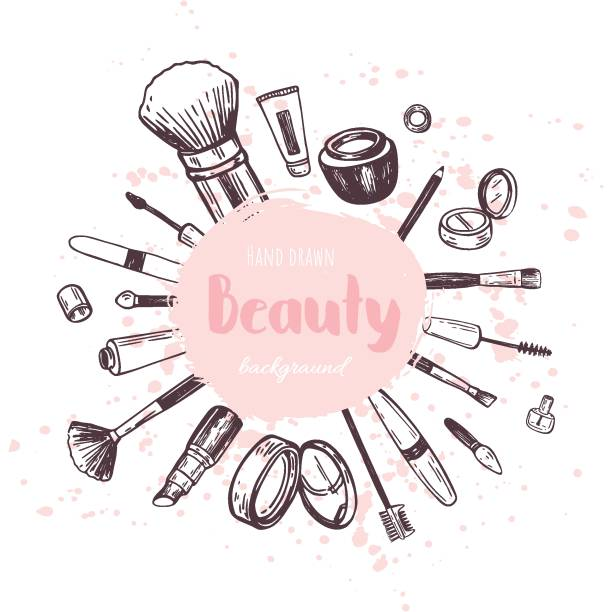
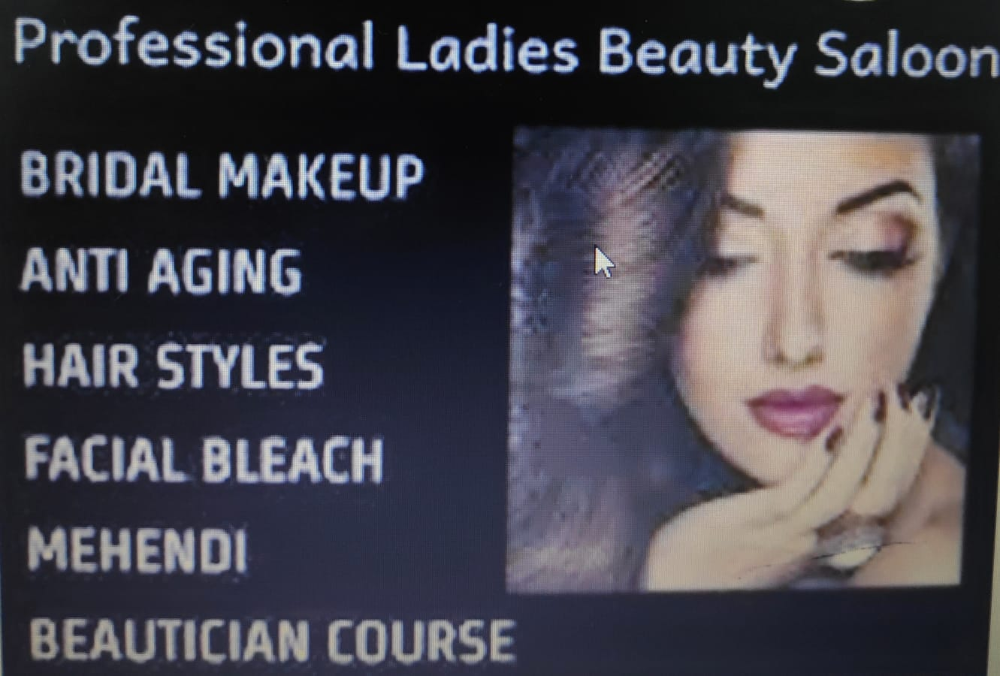
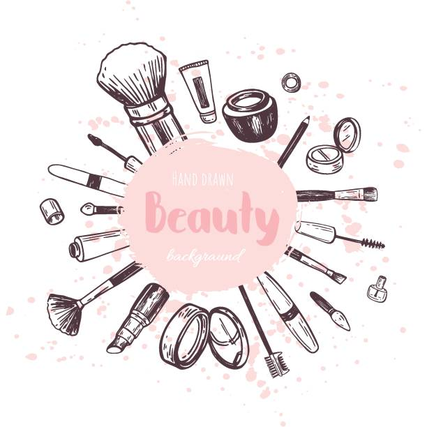
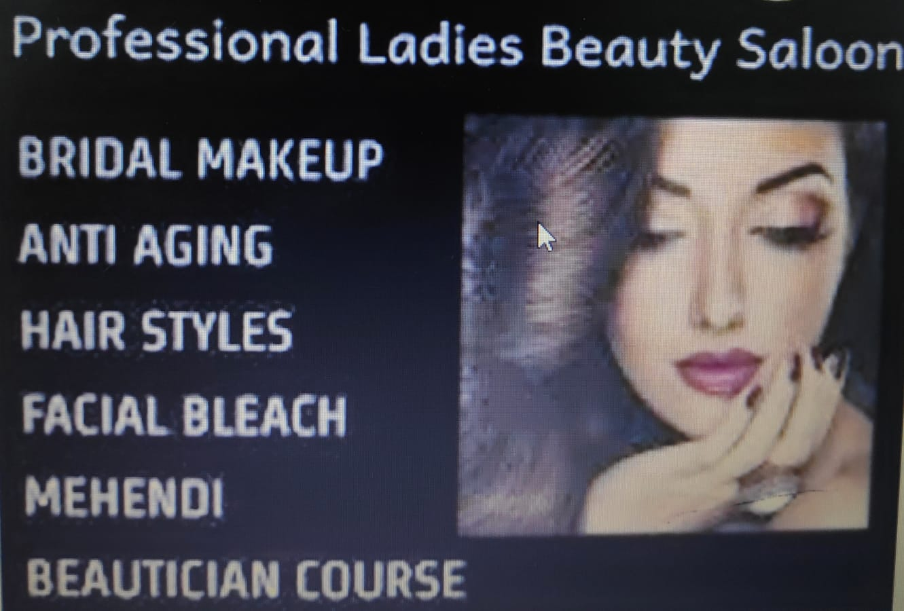
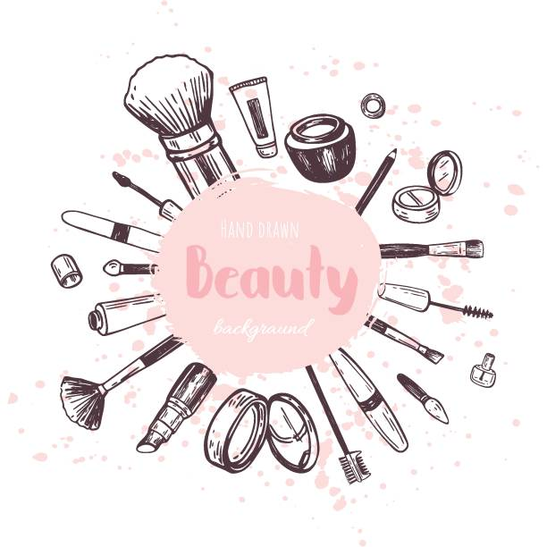
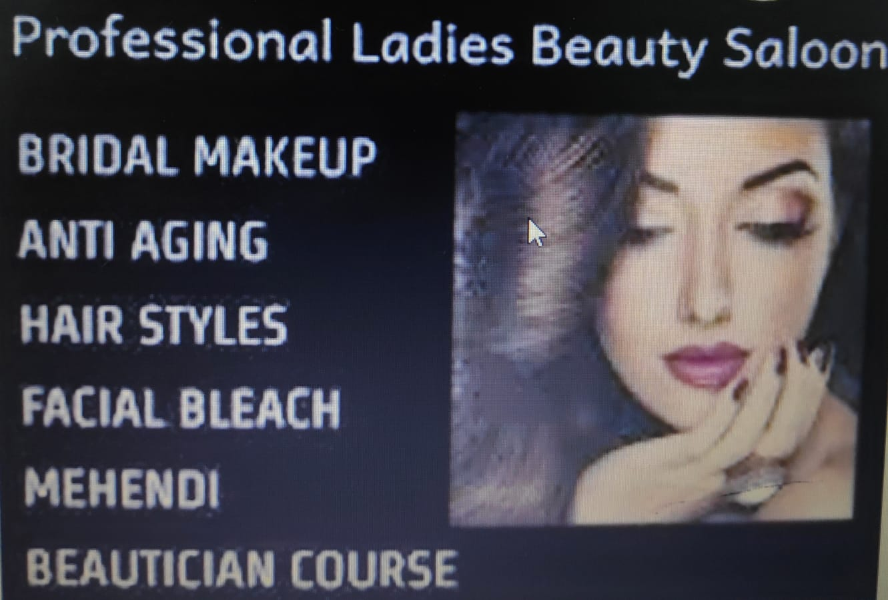
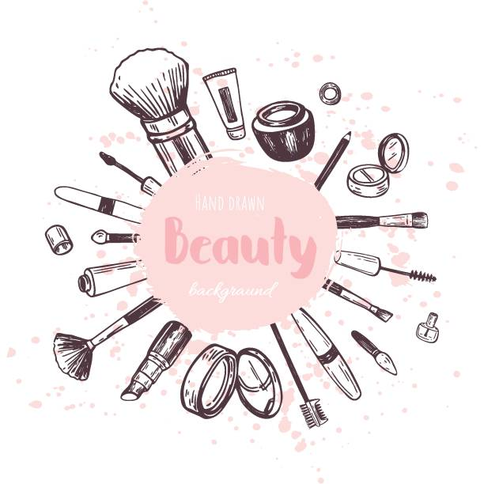
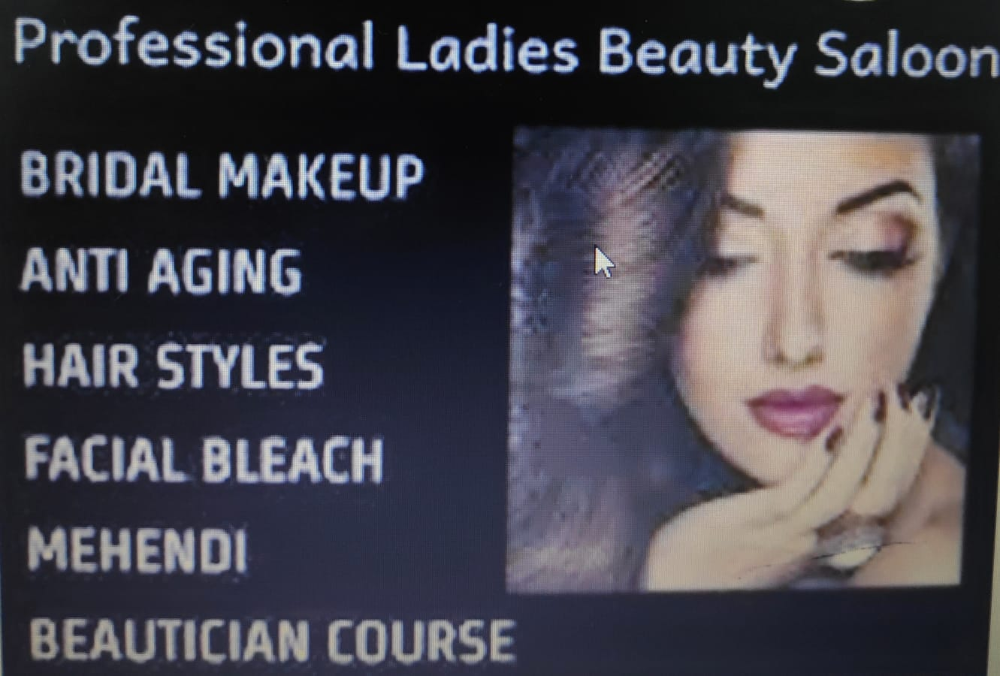

SAM PROFESSIONAL BEAUTY PARLOUR
DETAILS MAKEUP
 







In today's world, a woman has literally hundreds of cosmetics to choose from, with a wide variety of colors and uses. For a younger look, the options available are as simple as skin hydrators and rejuvenators, advancing to chemical skin peels, the now-popular Botox, collagen injections, and ending with the more-drastic surgical facelift.
It is important to reflect on one's inner beauty as the real beauty of a woman. Outer beauty will not remain forever, no matter what drastic measures are taken. We have all heard the saying, "The eyes are the windows to the soul". Look into your own orbits, take stock of the woman inside, and be happy with who you are. This will reflect on your outlook on life, which will send a message to others, and will be returned to you through their reactions to the beautiful you.